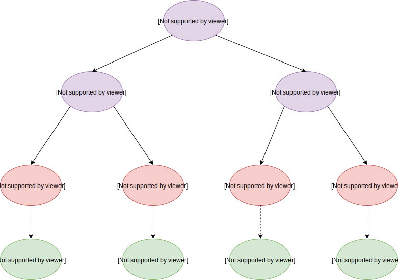

前言
postgresql 的表包含了多种类型的文件，其中 main 类型的文件存储实际的数据，以数据块的格式存储，称为 data block。一个 data block 包含了多条数据，当新建了一个data block 或者原有的数据被删除，那么这个 data block 就会有空闲位置，postgresql 使用 free space map 文件记录了每个 data block 的空闲空间，并且以树的结构组织起来，实现快速的查找。fsm文件同样是以数据块的格式存储，这里称为 fsm block。
Fsm page 格式
fsm page 有两种用途，分为 fsm page 叶子节点和 fsm page 非叶子节点，下面会分别介绍。两者共用一个存储格式，由 FSMPageData表示，在在src/backend/storage/freespac/fsmpage.c文件中定义。
|
|
数组 fp_nodes 会被用来表示一颗完全二叉树，来组织节点。在 fsm page 叶子节点中，它存储的是每个data block 的空闲空间。而在 fsm page 非叶子节点中，它存储的是每个 fsm page 的最大空闲空间。
Fsm page 叶子节点
完全二叉树
postgresql 使用数组来表示完全二叉树，下面展示了一颗二叉树，值为节点所在数组的索引号。
|
|
可以看出父子节点的位置关系，下面定义了获取父节点和子节点的方法
|
|
因为 fsm page 的长度是确定的，并且每个节点的长度固定，所以可以计算出节点的最大数目。
|
|
fsm规定了非叶子节点和叶子节点的数目，它只是简单的规定了非叶子节点的数目为块大小的一半
|
|
树结构
我们注意到 fp_nodes 是一个 uint8 数组，也就是说节点的值范围是 0 ~ 255 的范围，它表示一个 data block 的空闲大小。但是一个 data page 的大小为 8KB，显然超出了 255 的范围。postgresql 为了减少 fsm 的所占空间，将8KB 分成 255 等份，这样就能用1个字节表示 0 ~ 8KB 的范围，缺点就是只能粗略划分。对应关系如下：
| 数据大小 | 映射值 |
|---|---|
| 0 ~ 31 | 1 |
| 32 ~ 63 | 2 |
| ....... | ....... |
| 8164 ~ 8192 | 255 |
下面展示了 fsm page 的树结构，树的每个叶子节点对应一个数据块的空闲空间，而非叶子节点是子节点的最大值。如果以fsm block 为 8KB 来计算，那么这颗树的高度为12（因为2^12=4096）。下面的图片展示了树结构
我们可以看到每个叶子节点对应着一个 data block 的空闲大小，而每个非叶子节点是两个子节点的最大值。如果要寻找满足指定空间大小的 data block，只需要从上往下遍历就能快速的寻找到。
这里还需要注意到叶子节点是按照 data block 顺序存储的，这在后面根据叶子节点所在的索引号，来确定对应的 data block number 有用到。
下面介绍常见的函数：
|
|
Fsm page 非叶子节点
上面介绍了一个 fsm page 的内部结构，我们知道 page 的长度是固定的，默认为 8192B，那么它的叶子节点数目最大为4097。一个 data block 的长度默认为 8KB，所以表示的 data 最大长度为 4097 * 8KB ≈ 32MB。结论就是一个 fsm page 最多只能表示32MB的数据。
很明显一个 fsm page 不够用。postgresql 为了解决这个问题，将这些 fsm block 组织成了一棵树，这颗树的层级为3级，每个叶子节点对应一个 fsm page 的最大空闲空间，非叶子节点为叶子节点的最大值。
每个 Fsm page 非叶子节点的子节点数目为#define SlotsPerFSMPage LeafNodesPerPage，那么这棵树的叶子节点有 4097* 4097 个，那么能够表示 data 长度为 4097 * 4097 * 32MB ≈ 2PB，这个大小几乎完全够用了。
对于这颗树的节点位置，由FSMAddress 可以确定，定义在src/backend/storage/freespace/freespace.c文件中
|
|
Fsm page 存储位置
上面介绍了 fsm page 有两种用途和内部结构，但是并没有介绍它是对应 fsm 文件的 block 。FSMAddress定义了 fsm page 的逻辑地址，我们需要能够转换为 fsm block number。转换原理定义在fsm_logical_to_physical函数里，可以结合下图来理解：
这颗树有三层，最上面的一层为 root 节点，最下面一层是 fsm page 叶子节点。每个 fsm page 对应一个唯一的 fsm block。图中FSMAddress(1，1)表示 level 1 层的第1个节点，FSMBlockNum(6)表示存储在 block num 为 6 的 fsm block 里。我们可以观察到 fsm block number 是按照深度遍历的顺序递增的。
比如我们计算FSMAddress(1，1)节点的 fsm block num，第一步计算出前面有多少个底层的节点。这里只需要计算第三层的节点，等于 4 * 1 。然后计算上面每层的排在前面的节点数。开始计算第二层的节点数为1，这里包含了自身节点。第一层的节点数为1。那么前面总共有 4 + 1 + 1 = 6 个节点，因为索引是从0开始计算的，所以它的 fsm block number 为 6。
fsm_logical_to_physical函数写的有点绕，它会计算出该节点下的第一个叶子节点的 fsm block number，然后再计算出该节点的 fsm block number。比如我们计算FSMAddress(1，1)节点，首先计算它下面的第一个叶子节点FSMAddress(0，4)的fsm block number。
|
|
查找空闲空间
fsm 文件最重要的一点就是如何快速的查找到指定大小的空闲空间。查找逻辑如下：
- 首先查找 root fsm page 节点，它作为根节点，保存了最大空闲空间。如果小于指定大小，那么返回null。否则进入步骤 2。
- 从 root fsm page 节点开始，从上到下，一直找到满足条件的叶子节点 fsm page。
- 从叶子节点 fsm page 中，找到满足条件的 data block number。
无论是查找 fsm page 树还是查找单个 fsm page里面的树，查找原理都是一样的。从root节点开始查找，一直向下，找到子节点page。然后从子节点page找到满足的blocknum。